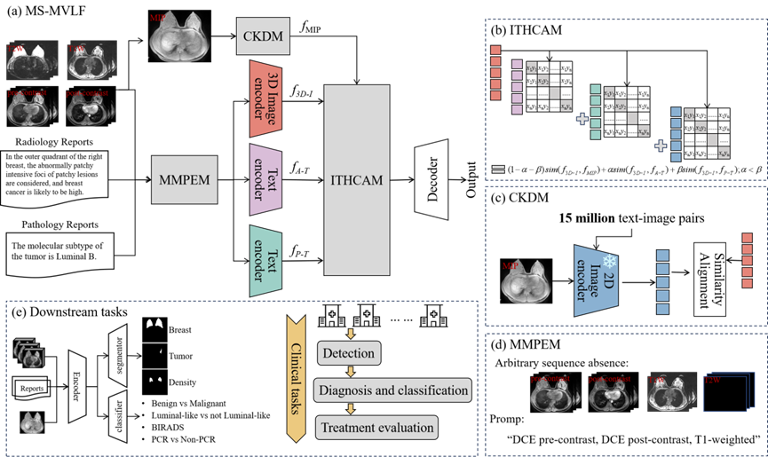
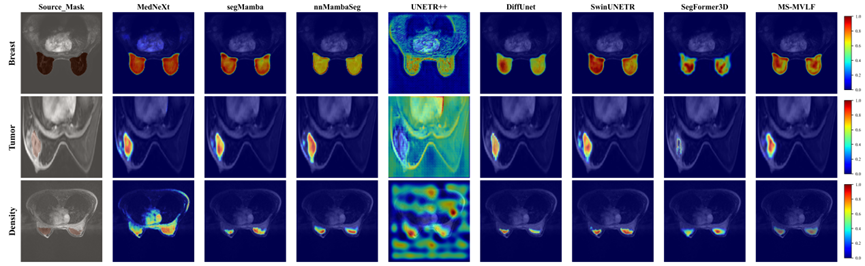
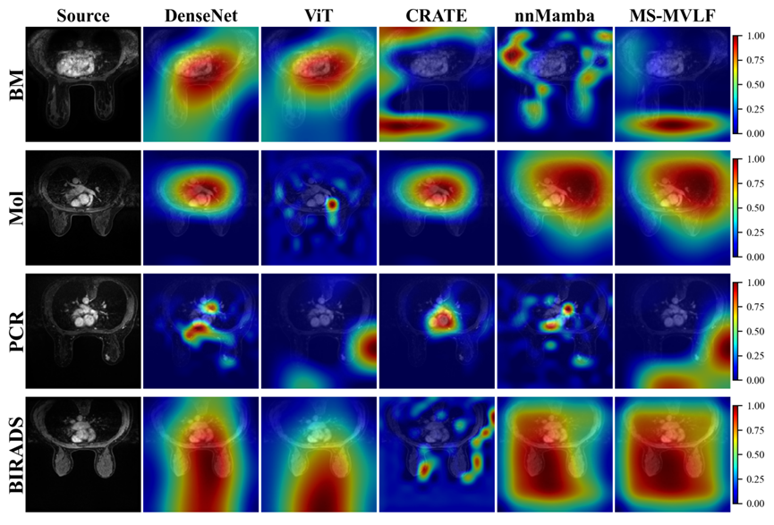

Current contrastive learning approaches for 3D magnetic resonance imaging (MRI) face two major limitations: the substantial size of volumetric data complicates alignment with radiology reports, and the resulting image-text alignment lacks adaptability to pathological subtypes and treatment-related applications. To address these challenges, we propose a Multi-Sequence Medical Vision-Language Framework (MS-MVLF). Our proposed method introduces a cross-dimensional knowledge distillation strategy, utilizing 2D maximum intensity projection images as anchors to enhance semantic alignment between intricate 3D imaging features and textual descriptions, while accelerating model convergence. Diverging from conventional contrastive learning approaches that rely exclusively on radiology reports, our framework incorporates pathology reports as fine-grained supervisory signals during the alignment process, thereby extending the model's applicability and theoretical generalizability to treatment-oriented scenarios. Experimental validation was conducted on 14070 pairs of text-image data from six datasets, demonstrating significant performance gains across seven downstream tasks. In segmentation tasks, the framework achieved Dice coefficients of 95.2% for breast region segmentation, 71.5% for tumor segmentation, and 88.3% for breast density assessment. For classification tasks, MS-MVLF attained the highest AUROC scores in benign-malignant classification (88.2%), molecular subtype classification (64.5%), PCR classification (70.4%), and BIRADS grading (71.3%). These results confirm the effectiveness of the proposed framework.

Figure 1. An overview of the proposed multi-sequence medical visual language framework (MS-MVLF) process. (a) The overall model architecture. (b) The Image-Text Hierarchical Cross-modal Contrast Alignment Module (ITHCAM), which progressively aligns image features with radiology reports at a foundational level and with pathology reports at a more advanced level through contrastive learning. (c) The 2D-3D Cross-dimensional Knowledge Distillation Module (CKDM), designed to transfer semantic priors from 2D models to guide 3D feature learning. (d) The Multi-Sequence Missing Perception Prompt Encoding Module (MMPEM), which leverages sequence-specific prompts to help the model capture complementary diagnostic information across multiple imaging sequences. (e) Downstream tasks that support the full clinical workflow of breast cancer diagnosis and treatment, covering image segmentation, benign-malignant classification, molecular subtyping, and prognosis evaluation.


Figure 2. Visualization of downstream tasks supported by MS-MVLF. (a) Segmentation tasks include breast region segmentation, tumor segmentation, and breast density assessment. (b) Classification tasks include benign-malignant classification, molecular subtype classification, PCR classification, and BIRADS grading.